Show the code for the table of countries
knitr::kable(as.data.frame(table(Region = cc$region)))| Region | Freq |
|---|---|
| Africa | 27 |
| Asia/Oceania | 38 |
| Europe | 40 |
| North America | 8 |
| South America | 8 |
From twelve scatterplots to one multivariate picture of life at different levels of GDP
Michael Friendly
November 1, 2026
I saw this chart on X from Our World In Data, relating aspects of “How is Life?” to countries’ GDP per cap. My first thought was “Wow!” that’s an excellent example of small multiples to see many variables together in a single view: 12 indicators, each one plotted against log GDP per capita, one dot per country. The message is immediate: almost all indicators of quality of life get better as countries get richer.
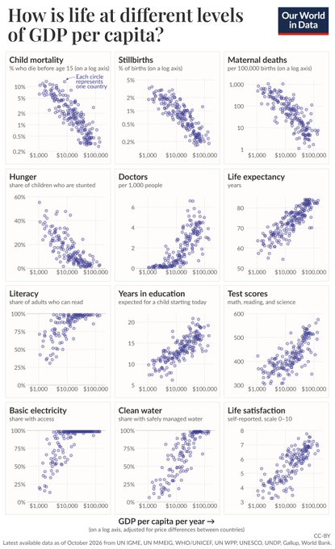
In his post, Max Roser put the message this way: “Where GDP per capita is higher, living conditions are far better in many ways.” That is true, and the analysis below confirms it. But it also invites the next questions: are these measures better in the same way, in the same countries? Even more interesting to me is the question, what is left over, remains to be explored, once income is accounted for?
So, it also struck me as something from which more might be learned from a multivariate perspective. Figure 1 shows 12 separate bivariate displays. What it can’t show:
Thinking this way, we can frame this as a “\(p\) responses, one predictor” problem, i.e., a multivariate linear model (MLM): \[ f(\mathbf{Y})_{n \times p} = g(x)\,\mathbf{B}_{1 \times p} + \mathbf{E}_{n \times p} \; , \] where \(x\) is GDP per capita. Both sides can be transformed to make relations more nearly linear:
I call this a doubly generalized linear model, but that is more a conceptual term than a statistical one, because the details that give it structure need to be worked out, as in generalized linear models (Nelder and Wedderburn 1972) and generalized additive models (Hastie and Tibshirani 1986). The goal is to allow flexibility in the transformations of the predictor and the response variables that make the fitted relations linear in the parameters in \(\mathbf{B}\).
The statistical questions are then about the fitted part \(\widehat{\mathbf{Y}} = g(x)\widehat{\mathbf{B}}\) and the residual covariance \(\boldsymbol{\Sigma}\) of the rows of \(\mathbf{E}\). These create some interesting possibilities for visualizing these relations, using and extending the methods I describe in my book Visualizing Multivariate Data and Models in R (Friendly 2024) and R packages heplots, candisc, mvinfluence (Friendly et al. 2026; Friendly and Fox 2026; Friendly 2026) and others.
As an added bonus, I also discovered several aspects of a multivariate approach to this problem and similar ones, that make analysis and visualization simpler or easier to understand.
A word about what I bring to this. I’m a statistician and a data visualization person, not an economist, demographer or public health expert, and I don’t know the literature on any of these measures, their limitations and especially how comparable the values are across time and place. When I say why a country stands out, say that a country lives longer or less long than its income predicts, that comes from what the analysis and the graphs show, together with what I know in general about the countries. Take these as hypotheses to check, not as findings. I’d be glad to hear from readers who know the countries or the measures better.
I’m grateful to the team at Our World In Data for making these data so easy to get. (Well, easy for Claude AI to find, given Figure 1 and a pointer to the OWID GitHub repo.)
I found the data in the OWID grapher series. Each panel of Figure 1 is a standard OWID chart. For example life expectancy. Every chart has a download tab, and its data are also available as a CSV file at https://ourworldindata.org/grapher/<slug>.csv. So it was easy to download the 12 indicators, plus GDP per capita, and merge them by country code. The script R/get-LifeGDP.R does this. Like the OWID chart, it takes the most recent year available for each country and indicator, and keeps only countries, not regional aggregates. That gives a data set of 198 countries.
The indicators come from many sources (UN agencies, UNESCO, Gallup, the World Bank), so not every country has every one. Water and life satisfaction have the most gaps, and literacy has a more curious problem: For many rich countries the most recent literacy figure is a historical estimate for 1950, presumably because nobody measures literacy where it is near 100%. Rather than deal with these issues here, I use the 9 indicators with the best coverage and leave out literacy, test scores and stunting. That leaves 121 countries with complete data on all 9.
The variables used in the analyses here are:
GDP: GDP per capita, in constant international dollars (PPP); the predictorChildMort: percent of children dying before age 15Stillbirth: stillbirths per 100 birthsMatMort: maternal deaths per 100,000 live birthsDoctors: physicians per 1,000 peopleLifeExp: life expectancy at birth, in yearsSchoolYrs: expected years of schoolingElectricity: percent of the population with access to electricityWater: percent of the population using safely managed drinking waterLifeSat: life satisfaction, on the 0–10 Cantril ladder (Cantril 1965)A bit of preparation makes the multivariate analyses go more smoothly:
Transformations.
Orientation. Child mortality, stillbirths and maternal mortality are “bad” outcomes, where lower is better. I reverse them (using \(-\log\)), so that higher means better on every response, in contrast to Figure 1, where you have to think about what direction is better. This small step makes every later display, from correlation matrices to biplots, much easier to read: all the arrows and ellipses point the same semantic way.
Standardization. For the multivariate models the responses are standardized to \(z\)-scores, so that no single indicator dominates because of its units.
Finally, for comparisons among regions I use OWID’s continents. Only one country from Oceania has complete data, so I merged it with Asia.
Small multiples invite comparison within a panel. Comparing across panels is harder: each panel in Figure 1 has its own vertical scale and units, so it is hard to say whether electricity or life expectancy “responds” to income sooner in relation to \(\log(GDP)\)
A first step is to add a smoother to each panel. Figure 2 does this for the top two rows of Figure 1, using a loess curve, with the three rates on a log scale as in the OWID chart.
# The top two rows of the OWID chart, with a loess smoother added to each panel
panels <- c("ChildMort", "Stillbirth", "MatMort", "Stunting", "Doctors", "LifeExp")
LifeGDP |>
select(GDP, all_of(panels)) |>
mutate(across(c(ChildMort, Stillbirth, MatMort), log10)) |>
pivot_longer(all_of(panels), names_to = "indicator", values_to = "value") |>
mutate(indicator = factor(indicator, levels = panels)) |>
ggplot(aes(GDP, value)) +
geom_point(shape = 1, colour = "navy") +
geom_smooth(method = "loess", formula = y ~ x, se = FALSE, colour = "red") +
scale_x_log10(breaks = c(1e3, 1e4, 1e5), labels = c("$1,000", "$10,000", "$100,000")) +
facet_wrap(~ indicator, scales = "free_y") +
labs(x = "GDP per capita (log scale)", y = "Value (log10 for ChildMort, Stillbirth, MatMort)") +
theme(axis.text.x = element_text(size = 9))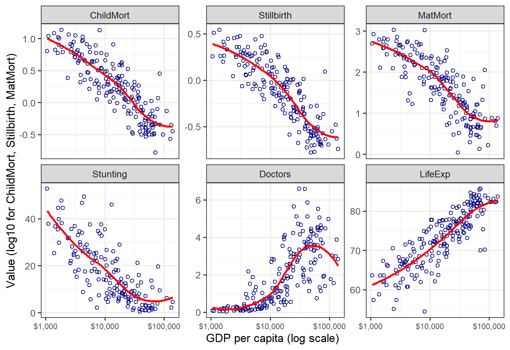
The curves bring out what the clouds of points only suggest: these relations are not all approximately straight lines. Doctors is the clearest case, staying near zero up to about $10,000, then climbing steeply, and falling back among the richest countries. Smoothers help you read each panel, but they don’t make it any easier to compare one panel with another, particularly when the panels are not arranged in any meaningful order.
One simple way to put the responses on a common footing:
Overlaying the rescaled curves gives Figure 3. I call these development profiles. Each curve shows how far a typical country at a given income has come, on that indicator, along the path from the poorest to the richest. I haven’t seen this kind of chart before. I think it could be more generally useful for this type of analysis looking at several aspects of an outcome (“good life” here) in relation to a single predictor.
The code below calculates a development threshold: GDP where the fitted profile first reaches 10/50/90% of its range.
# Smooth fit of each (transformed) response on log GDP, using all available countries
# for each response, rescaled to [0, 1] over the observed GDP range:
# 0 = level of the poorest countries, 1 = level of the richest
grid <- data.frame(logGDP = seq(min(OW$logGDP), max(OW$logGDP), length.out = 200))
fit_profiles <- function(data) {
lapply(resp, \(v) {
fit <- lm(reformulate("ns(logGDP, 3)", v), data = data)
yhat <- predict(fit, newdata = grid)
data.frame(grid, response = v,
fit = (yhat - min(yhat)) / (max(yhat) - min(yhat)))
}) |> bind_rows()
}
# "development threshold": GDP where the fitted profile first reaches 10/50/90% of its range
fit_thresholds <- function(profiles) {
profiles |>
group_by(response) |>
summarise(half = logGDP[which(fit >= 0.5)[1]],
q10 = logGDP[which(fit >= 0.1)[1]],
q90 = logGDP[which(fit >= 0.9)[1]]) |>
arrange(half) |>
mutate(response = factor(response, levels = response))
}
profiles <- fit_profiles(OW)
thresholds <- fit_thresholds(profiles)
profiles$response <- factor(profiles$response, levels = levels(thresholds$response))
# GDP values for inline text, e.g. `r usd(thr50["Water"])`
usd <- function(x) paste0("\\$", format(round(x, -2), big.mark = ",", trim = TRUE))
thr50 <- setNames(10^thresholds$half, thresholds$response)Plot them:
dollar_log <- scale_x_continuous(breaks = 3:5, labels = c("$1,000", "$10,000", "$100,000"))
# label each curve at GDP = $10,000, where the curves are spread out; right-justified
# labels just left of the curve, with white boxes so the curves don't run through the text
lab10k <- profiles |>
group_by(response) |>
slice_min(abs(logGDP - 4), n = 1, with_ties = FALSE) |>
ungroup()
ggplot(profiles, aes(logGDP, fit, colour = response)) +
geom_line(linewidth = 1.1) +
geom_point(data = lab10k, size = 1.8) +
geom_label_repel(data = lab10k, aes(label = response), hjust = 1, direction = "y",
nudge_x = -0.15, xlim = c(NA, 3.92), box.padding = 0.15,
label.padding = 0.12, label.size = NA, fill = alpha("white", 0.85),
segment.colour = "grey50", size = 3.8, fontface = "bold",
min.segment.length = 0, seed = 1) +
dollar_log +
labs(x = "GDP per capita (log scale)",
y = "Development progress (proportion of fitted range)") +
theme(legend.position = "none")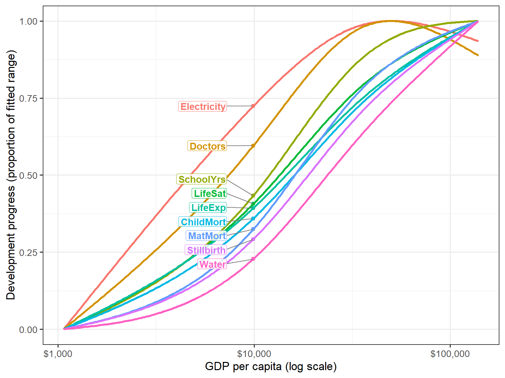
The curves are not parallel. They come in a clear sequence, which is easiest to see by reading across at height 0.5:
Figure 4 summarizes the profiles as “development thresholds”. The dot marks the GDP at which each profile reaches half its range, and the line runs from 10% to 90%. The lines show a second difference, in how quickly each indicator changes. Electricity and doctors go from 10% to 90% over about a 15-fold range of GDP. Life expectancy and child mortality take more than 30-fold: they improve gradually, and keep improving, over almost the whole range of incomes.
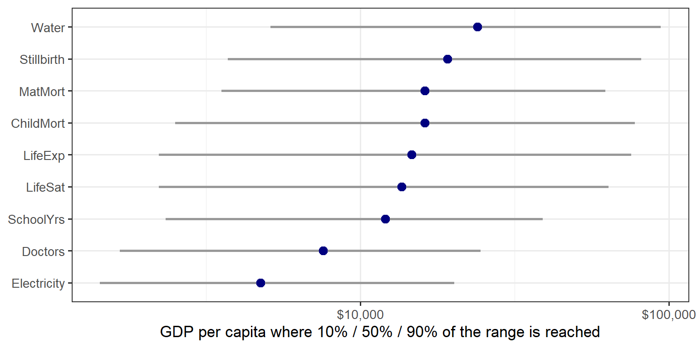
It is tempting to read this as a story of infrastructure and personnel first, outcomes later. But a caution is needed, because the sequence depends on the scale of each response. Figure 5 repeats the calculation on the original scales of the OWID chart.
# Same profiles on the original scales (mortality-type outcomes only negated)
OWraw <- LifeGDP |>
transmute(logGDP = log10(GDP), ChildMort = -ChildMort, Stillbirth = -Stillbirth,
MatMort = -MatMort, Doctors, LifeExp, SchoolYrs, Electricity, Water, LifeSat)
thresholds_raw <- fit_thresholds(fit_profiles(OWraw))
thr50_raw <- setNames(10^thresholds_raw$half, thresholds_raw$response)usd_plain <- function(x) paste0("$", format(round(x, -2), big.mark = ",", trim = TRUE))
ranks <- data.frame(response = names(thr50), rank1 = seq_along(thr50), gdp1 = thr50) |>
inner_join(data.frame(response = names(thr50_raw), rank2 = seq_along(thr50_raw), gdp2 = thr50_raw),
by = "response") |>
mutate(response = factor(response, levels = names(thr50)))
# S-shaped curve joining each outcome's two ranks (ggbump isn't on CRAN)
curves <- ranks |>
reframe(x = seq(1, 2, length.out = 100), .by = c(response, rank1, rank2)) |>
mutate(rank = rank1 + (rank2 - rank1) * plogis(10 * (x - 1.5)))
ggplot(ranks, aes(colour = response)) +
geom_line(data = curves, aes(x, rank), linewidth = 1.1) +
geom_point(aes(1, rank1), size = 3.5) +
geom_point(aes(2, rank2), size = 3.5) +
geom_text(aes(1, rank1, label = paste0(response, " ", usd_plain(gdp1))), hjust = 1,
nudge_x = -0.05, size = 3.8, fontface = "bold") +
geom_text(aes(2, rank2, label = paste0(usd_plain(gdp2), " ", response)), hjust = 0,
nudge_x = 0.05, size = 3.8, fontface = "bold") +
scale_x_continuous(breaks = 1:2, labels = c("Transformed scales", "Original scales"),
position = "top", limits = c(0.45, 2.55), expand = c(0, 0)) +
scale_y_reverse(breaks = 1:9) +
labs(x = NULL, y = "Order of reaching half the range (1 = earliest)") +
theme(legend.position = "none", panel.grid = element_blank(), panel.border = element_blank(),
axis.ticks = element_blank(), axis.text.x.top = element_text(face = "bold", size = 13))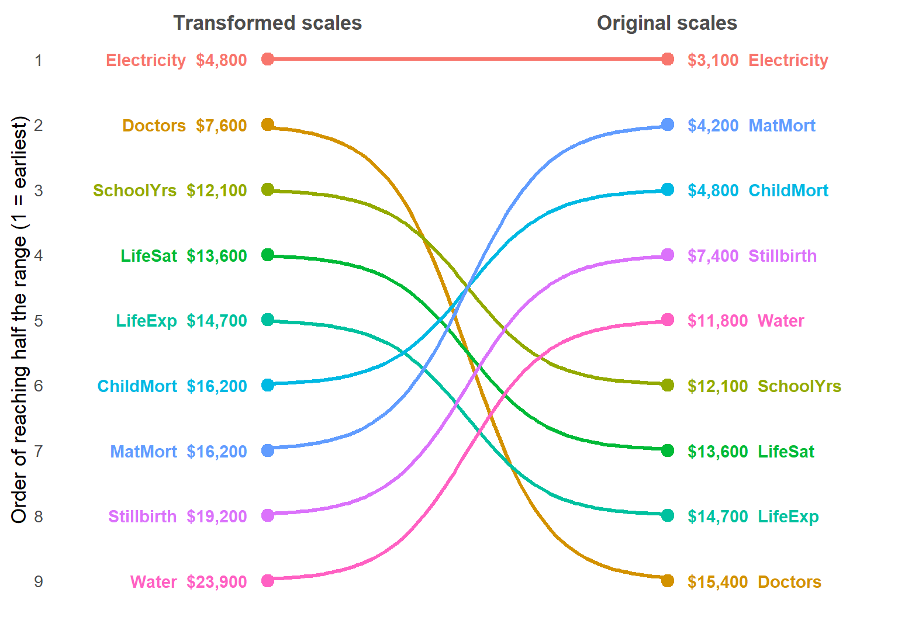
Life expectancy, schooling and life satisfaction were not transformed, so their thresholds don’t change. The rest change a lot:
Neither version is “right”. A log scale measures relative change and a raw scale measures absolute change, and which matters depends on the question. For the multivariate analyses that follow, I chose the transformations to make the relations closer to linear and the variances more similar. But it’s worth knowing that this choice also changes the story a display tells.
It is hard to look at a sequence like this without thinking of Maslow’s (1943) hierarchy of needs, in which survival and safety come first, and higher aspirations only after them. On the original scales, the order looks roughly like that: apart from electricity, the mortality measures and water come first, followed by schooling and then life satisfaction. But on the transformed scales it nearly reverses, with life satisfaction ahead of child mortality and safe water last of all. So the resemblance is at least partly a matter of scale. Besides, Maslow was describing the motivation of individuals, whereas these curves compare different countries at one time. A country at $5,000 today is not a picture of where a country at $50,000 once was.
One more detail: the Electricity and Doctors profiles turn down slightly at the top of the GDP range. This is most likely an end effect of the spline. Only 10 countries have GDP per capita above $80,000: a mixed group of financial centers (Luxembourg, Singapore, Ireland, Switzerland), petro-states (Qatar, Norway) and Guyana, recently rich from oil. That is too few to pin down the shape of a curve.
The development profiles were still nine separate regressions. The multivariate linear model fits them all at once. In R this needs only a matrix on the left side of the model formula. Here that is Z, the \(121 \times 9\) matrix of standardized responses for the countries with complete data. The estimated coefficients \(\mathbf{B}\) are exactly the same as from nine separate lm() fits.
What the MLM adds are tests that consider all the responses together, taking their correlations into account. Here I use Pillai’s trace for these tests.
The first question is whether the relation with log GDP is linear when all the outcomes are considered together. To allow for curvature I use a natural spline in log GDP with 3 degrees of freedom, ns(logGDP, 3), which I say more about in The spline trick below. A quick multivariate test shows that this gives a highly significant improvement over a straight line (Pillai = 0.71, \(F(18, 220) = 6.72\), \(p < 10^{-12}\)).
#> Analysis of Variance Table
#>
#> Model 1: Z ~ logGDP
#> Model 2: Z ~ ns(logGDP, 3)
#> Res.Df Df Gen.var. Pillai approx F num Df den Df Pr(>F)
#> 1 119 0.18462
#> 2 117 -2 0.16925 0.70941 6.7183 18 220 2.49e-13 ***
#> ---
#> Signif. codes: 0 '***' 0.001 '**' 0.01 '*' 0.05 '.' 0.1 ' ' 1Table 1 shows that this curvature is not spread evenly across the responses. Access to electricity gains the most (.62 to .74), followed by doctors (.70 to .77). These are the two profiles that bend most in Figure 3. Electricity saturates even on the logit scale, and doctors turn down among the richest countries. The mortality measures, water and schooling gain less, .02 to .04, from the gentler S-shapes of their profiles. Only for life expectancy and life satisfaction does a straight line in log GDP do about as well as a curve.
| linear | spline | diff | |
|---|---|---|---|
| ChildMort | 0.78 | 0.81 | 0.03 |
| Stillbirth | 0.77 | 0.81 | 0.04 |
| MatMort | 0.70 | 0.73 | 0.03 |
| Doctors | 0.70 | 0.77 | 0.06 |
| LifeExp | 0.75 | 0.75 | 0.01 |
| SchoolYrs | 0.67 | 0.69 | 0.02 |
| Electricity | 0.62 | 0.74 | 0.12 |
| Water | 0.74 | 0.77 | 0.03 |
| LifeSat | 0.66 | 0.66 | 0.01 |
The next question is whether region matters, beyond GDP. With region as a 5-level factor, the standard analysis formally becomes multivariate analysis of covariance (MANCOVA), or a test of homogeneity of regressions depending on your perspective for what you want to account for first.
As before, I use the natural spline in log GDP, to allow for non-linearity, as the covariate. Both terms are highly significant (Pillai = 1.26 for GDP and 1.33 for region, both \(p < 10^{-15}\)). Adding region raises \(R^2\) for every response. The largest gains are for maternal mortality (.73 to .82), doctors (.77 to .85) and electricity (.74 to .85).
#>
#> Type II MANOVA Tests: Pillai test statistic
#> Df test stat approx F num Df den Df Pr(>F)
#> ns(logGDP, 3) 3 1.2582 8.5882 27 321 < 2.2e-16 ***
#> region 4 1.3308 5.9831 36 432 < 2.2e-16 ***
#> ---
#> Signif. codes: 0 '***' 0.001 '**' 0.01 '*' 0.05 '.' 0.1 ' ' 1The region coefficients, relative to Africa, are positive for nearly every response. At the same level of GDP, African countries do worse on almost all of these outcomes. Europe is furthest ahead on the mortality measures, nearly one standard deviation. Life satisfaction gives the largest regional difference: North and South America are 1.06 and 0.82 SD above Africa, at the same GDP. This fits the high happiness scores often noted for Latin America. The HE plots in the next section show these region differences directly.
Last, a MANCOVA assumes that the slopes are the same in every region. That is, it assumes that the GDP gradient is the same in Africa as in Europe. Adding a GDP × region interaction tests this, and the assumption is rejected (Pillai = 0.66, \(F(36, 416) = 2.30\), \(p < .0001\)). Two caveats apply:
#> Analysis of Variance Table
#>
#> Model 1: Z ~ ns(logGDP, 3) + region
#> Model 2: Z ~ ns(logGDP, 3) + region + logGDP:region
#> Res.Df Df Gen.var. Pillai approx F num Df den Df Pr(>F)
#> 1 113 0.14385
#> 2 109 -4 0.13710 0.66349 2.2979 36 416 5.449e-05 ***
#> ---
#> Signif. codes: 0 '***' 0.001 '**' 0.01 '*' 0.05 '.' 0.1 ' ' 1The GDP slopes are not homogeneous across regions, so this is a MANCOVA with a caveat: the region effects in the additive model should be read as average differences, over the range of GDP where the regions overlap. I keep the additive model as a useful summary for the HE plots that follow.
The tests in the last section say that GDP and region matter, jointly over all the outcomes. They don’t say how. An HE plot shows this directly, for any pair of responses. It draws two kinds of ellipses:
The H ellipses are scaled so that a term is significant (by Roy’s test, at \(\alpha = .05\)) exactly when its ellipse sticks out beyond the E ellipse somewhere. Then you can read both the significance and the direction of an effect from the same picture.
See Friendly (2007), the heplots package, and the chapters on HE plots in my book Visualizing Multivariate Data and Models in R, for more.
The model is the MANCOVA from the last section, modR. There is one detail worth noting. With GDP entered as a single 1-df term, \(\log(\text{GDP})\), its H “ellipse” would collapse to a line: one linear predictor can push the responses in only one direction.
A trick, which I discovered from this example is to use a term, \(g[\log(\text{GDP})]\) which adds an extra degree of freedom or two, to allow the relationship to bend smoothly to some degree. Consequently, the GDP H ellipse is allowed to get slightly fatter than a line. In a panel for two responses, it is fat to the extent that their fitted curves against \(\log(\text{GDP})\) have different shapes. Two responses that bend in the same way, say both rising quickly and then levelling off together, still give a thin ellipse, because each is then nearly a linear function of the other. So the ellipse doesn’t measure curvature as such, but how differently the responses curve.
Here, I use a simple natural cubic spline, given by splines::ns(logGDP, df=3). This gives the GDP H ellipse some extra wiggle room to express non-linearity, if there is any in the data.
Figure 6 shows this for life expectancy and life satisfaction.
The dots in Figure 6 need a word of explanation. By default, heplot() marks each region with its raw mean. Here that would be misleading. The region H ellipse is adjusted for GDP, but the raw means are not. They would mostly show differences in income again, lying along the GDP direction, with Africa far down at the lower left. So instead I plot the GDP-adjusted region means, the means each region would have at the same GDP.
There is a tempting shortcut here that doesn’t quite work: fit a model with GDP alone, and average its residuals by region. Because region and GDP are related, with most African countries poor and most European ones rich, the GDP curve in that model absorbs part of the region differences before they are averaged, and the adjusted means come out too close together. This is the Frisch–Waugh–Lovell theorem at work: the residual trick reproduces a joint model only if GDP is removed from the region indicators as well as from the responses. The right way is to take the GDP part out using the coefficients from modR itself, which estimates GDP and region together. These partial residuals average to the same adjusted means that the region H ellipse tests. Here the shortcut makes a real difference: it shrinks the spread of the region means by a factor of 1.3 to 2 on most outcomes.
At the same GDP, North and South America are about 0.6 and 0.4 SD above average in life satisfaction. Africa is about 0.45 SD below average in both life expectancy and life satisfaction. Asia/Oceania is a little above average in life expectancy, and Europe a little above average on both.
# GDP-adjusted responses: partial residuals from modR, the responses minus the fitted GDP
# part of the model. Their region means are the adjusted means, at the same GDP, which the
# region H ellipse refers to.
X <- model.matrix(modR)
gdp <- grep("ns(logGDP", colnames(X), fixed = TRUE)
Z_adj <- scale(Z - X[, gdp] %*% coef(modR)[gdp, ], scale = FALSE)
adj_means <- aggregate(Z_adj, list(region = cc$region), mean)
# HE plot for two responses; GDP H ellipse vs. region H ellipse, relative to E.
# Suppress the raw region means and add the GDP-adjusted ones.
vars <- c("LifeExp", "LifeSat")
heplot(modR, variables = vars, factor.means = FALSE,
fill = TRUE, fill.alpha = 0.1, label.cex = 1.15,
term.labels = c("GDP (spline)", "region"))
points(adj_means[, vars], pch = 16, cex = 1.2)
text(adj_means[, vars], labels = adj_means$region, pos = c(3, 1, 3, 3, 3), cex = 1.1)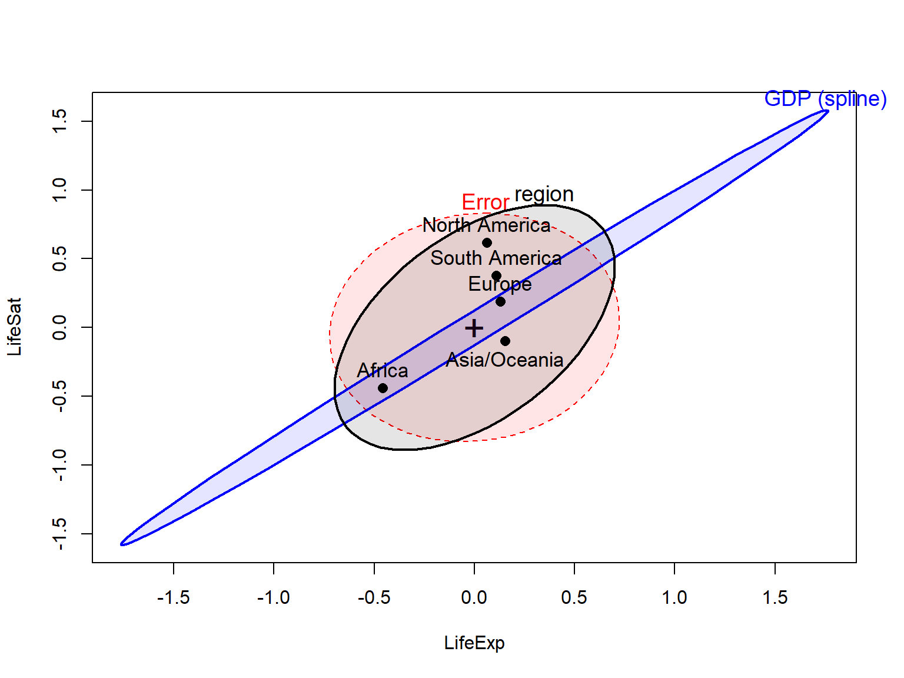
Figure 7 extends this to five of the responses, in an HE plot matrix. Two features stand out:
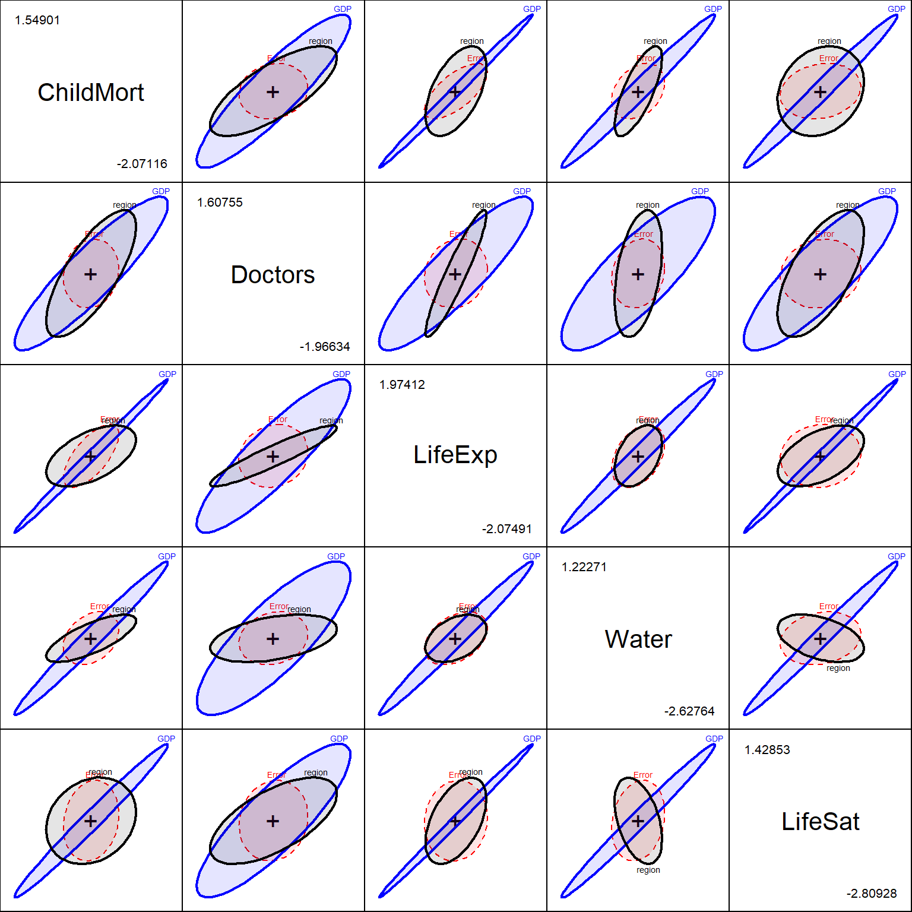
ns(logGDP, 3), in the model.
With nine responses there are 36 pairwise panels, too many to look at. A canonical discriminant analysis does the summarizing for us. It finds the linear combinations of the responses that best separate the regions, relative to the within-region variation. These are the dimensions of the region H ellipsoid in the full 9-dimensional space. There can be at most four dimensions, one fewer than the number of regions.
The same problem as with the dots in Figure 6 comes up here, in a bigger way. Running candisc() on modR itself gives canonical axes based on the GDP-adjusted region effect. But it computes the plotted scores (the points, region means and data ellipses) from the raw responses, so they still contain GDP. In that version of the plot, Can1 correlates −0.86 with log GDP, and the plot mostly shows the income gradient once more, from Africa to Europe.
The fix is the same as before, and it needs only the points to change. I keep the canonical axes from candisc(modR, term = "region"), so they are the dimensions of the region effect that was tested in the last section. Then I project the GDP-adjusted responses, the partial residuals Z_adj from Figure 6, onto those axes, and compute the variable vectors from them as well. Within regions, pooled over all five, the scores are now uncorrelated with log GDP, and the plot shows how the regions differ at the same income. Across all countries Can1 still correlates .56 with log GDP, because the regions differ in income and the poorer ones also tend to do worse than their income predicts, which is part of the region effect itself.
# Canonical axes for region from modR. Its scores, means and structure use the raw Z, which
# still contains GDP, so replace them using the partial residuals Z_adj
can_region <- candisc(modR, term = "region")
can_scores <- Z_adj %*% can_region$coeffs.raw
can_region$scores <- data.frame(region = cc$region, can_scores)
can_means <- aggregate(can_scores, list(region = cc$region), mean)
can_region$means <- can_means[, -1]
can_region$structure <- cor(Z_adj, can_scores)
print(can_region, digits = 3)#>
#> Canonical Discriminant Analysis for region:
#>
#> CanRsq Eigenvalue Difference Percent Cumulative
#> 1 0.5117 1.048 0.0547 42.40 42.4
#> 2 0.4983 0.993 0.0547 40.19 82.6
#> 3 0.2786 0.386 0.0547 15.63 98.2
#> 4 0.0422 0.044 0.0547 1.78 100.0
#>
#> Test of H0: The canonical correlations in the
#> current row and all that follow are zero
#>
#> LR test stat approx F numDF denDF Pr(> F)
#> 1 0.16926 6.8469 36 406.46 < 2.2e-16 ***
#> 2 0.34664 5.8192 24 316.73 1.157e-14 ***
#> 3 0.69096 3.1903 14 220.00 0.0001355 ***
#> 4 0.95783 0.8144 6 111.00 0.5609417
#> ---
#> Signif. codes: 0 '***' 0.001 '**' 0.01 '*' 0.05 '.' 0.1 ' ' 1# reverse Can1 so that right = better than income predicts on the mortality measures.
# plot() can't make the region labels bold, so blank them (rownames must differ) and add them after
region_cols <- scales::hue_pal()(nlevels(cc$region))
rownames(can_region$means) <- strrep(" ", seq_len(nlevels(cc$region)))
plot(can_region, var.lwd = 2, var.col = "black", ellipse = TRUE, rev.axes = c(TRUE, FALSE),
scale = 5.5, col = region_cols, var.pos = c(4, 3, 1, 4, 3, 1, 4, 4, 3))
text(-can_means$Can1, can_means$Can2, labels = can_means$region, col = region_cols,
font = 2, pos = c(1, 2, 4, 3, 1))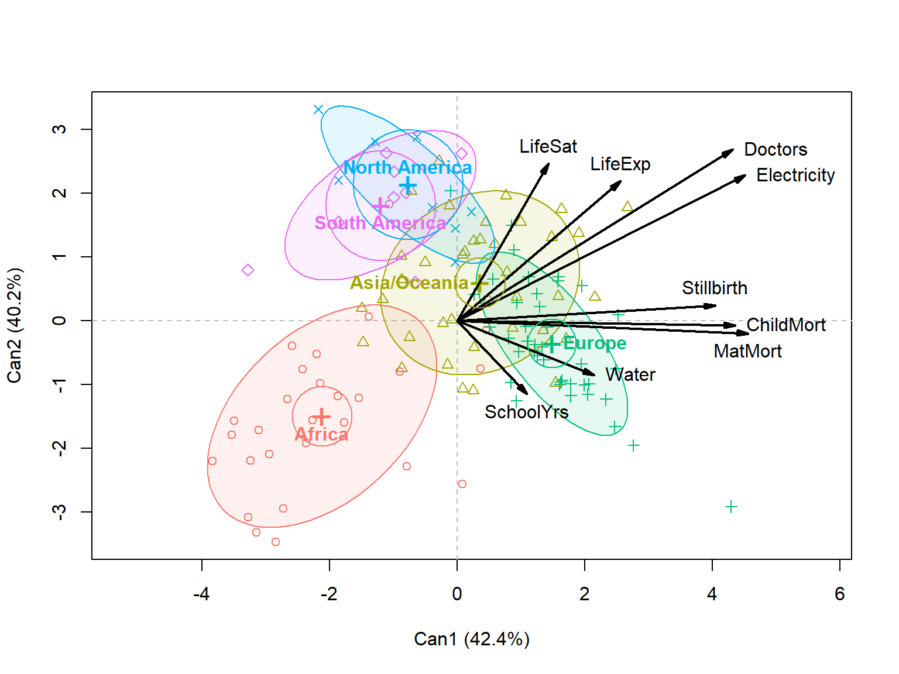
Two dimensions account for 83% of the GDP-adjusted region differences, and they are nearly equal in size. So the plane is better determined than either axis in it, but the axes are easy enough to interpret from the variable vectors.
A third dimension is also significant, with 16% of the region differences. It doesn’t appear in Figure 8. It relates most to life satisfaction and child mortality, with South America high and Asia/Oceania low.
Every outcome here is strongly related to GDP. The correlations with log GDP run from .79 for electricity to .88 for child mortality and stillbirths. So GDP acts as a common factor. Any two outcomes are bound to be highly correlated, just because both go up with income. The OWID chart in effect shows nine views of this one fact. The more interesting question is what is left when GDP is taken out: do the outcomes still hang together, and if so, which ones?
To answer it, I take the residuals from the MLM with the spline in log GDP, mod2. Each residual says how much better or worse a country does on an outcome than a typical country with the same income. Then I compare the correlations among the residuals, the partial correlations controlling for GDP, with the raw correlations.
#> ChildMort Stillbirth MatMort Doctors LifeExp SchoolYrs
#> 0.88 0.88 0.83 0.84 0.86 0.82
#> Electricity Water LifeSat
#> 0.79 0.86 0.81op <- par(mfrow = c(1, 2), mar = c(1, 1, 3, 1))
ord <- corrplot::corrMatOrder(R_part, order = "AOE")
corrplot::corrplot(R_raw[ord, ord], method = "ellipse", type = "lower", diag = FALSE,
tl.col = "black", tl.srt = 45, addCoef.col = "black",
number.cex = 0.6, title = "Raw", mar = c(0, 0, 2, 0))
corrplot::corrplot(R_part[ord, ord], method = "ellipse", type = "lower", diag = FALSE,
tl.col = "black", tl.srt = 45, addCoef.col = "black",
number.cex = 0.6, title = "Controlling for GDP", mar = c(0, 0, 2, 0))
par(op)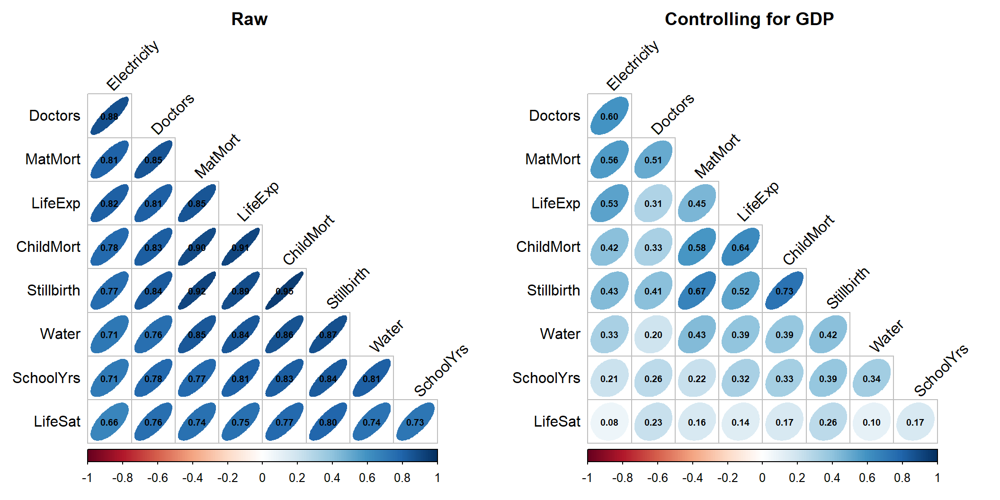
Figure 9 shows the two side by side. The variables in both panels are in the same order, found from the partial correlations, so that similar outcomes are next to each other.
Three features stand out in the partial correlations:
Some of this residual structure comes from region. The residuals here adjust for GDP only. If region is controlled as well (using modR from above), the partial correlations shrink again, to an average of .31, and electricity–doctors drops to .46. But the mortality block and its link to life expectancy hold up (child mortality–life expectancy is .68). Life satisfaction stays isolated.
A correlation matrix shows only the strength of linear association. Figure 10 shows the residuals themselves for five of the outcomes. The data ellipses confirm the picture: tilted ellipses among child mortality, maternal mortality and life expectancy, and nearly circular ones in the life satisfaction row. The plots also show what the correlations hide. Two points lie far out in the lower left of the mortality and life expectancy panels. These are Nigeria and Guyana, which do much worse on child mortality and life expectancy than their GDP predicts. Points like these can drive a correlation, and I return to them in the section on unusual countries below.
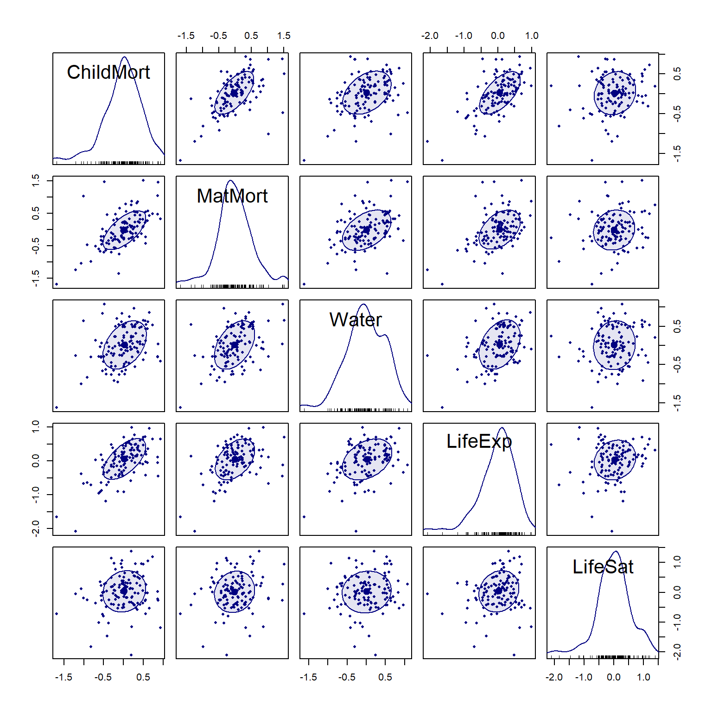
These points draw on all nine outcomes in Figure 9. Figure 10 shows only five of them, so stillbirths, doctors, schooling and electricity don’t appear there.
The usual first step in summarizing many correlated variables is a principal components analysis (PCA). Here, though, a PCA of the outcomes themselves has little to tell us. The first component accounts for 83% of the variance, and its scores correlate .92 with log GDP. It simply rediscovers income, the common factor that the OWID chart already puts on the horizontal axis.
#> PC1 PC2 PC3 PC4
#> Standard deviation 2.738 0.646 0.568 0.489
#> Proportion of Variance 0.833 0.046 0.036 0.027
#> Cumulative Proportion 0.833 0.879 0.915 0.942#> [,1]
#> PC1 0.92
#> PC2 -0.05A PCA of the residuals from the GDP model asks a more interesting question. Which countries achieve more, or less, than their income predicts, and on which outcomes? It is the dimension-reduction view of the residual correlations in the last section.
I haven’t seen this used anywhere, but it comes from thinking about what variables to display in plots, when you want to incorporate some known variable and see what remains to be explained. Common examples of this are added variable plots, implemented in car::AVplots() and my recent extension of this idea, partial variable plots, implemented in heplots::pvPlot().
#> PC1 PC2 PC3 PC4
#> Standard deviation 0.992 0.569 0.519 0.450
#> Proportion of Variance 0.433 0.143 0.119 0.089
#> Cumulative Proportion 0.433 0.576 0.695 0.784#> PC1 PC2
#> ChildMort 0.34 -0.07
#> Stillbirth 0.36 0.02
#> MatMort 0.42 -0.15
#> Doctors 0.31 0.01
#> LifeExp 0.37 -0.13
#> SchoolYrs 0.30 0.20
#> Electricity 0.37 -0.25
#> Water 0.29 -0.08
#> LifeSat 0.20 0.92The residual PCA has a clear structure:
Figure 11 shows both together, in a biplot: points for countries, and vectors for the outcomes. The vectors for the seven health and infrastructure outcomes fan out together to the right, along PC1. Schooling tilts upward a little. Life satisfaction points almost straight up, nearly at right angles to the others, which is how a biplot shows near-zero correlation.
scores <- data.frame(cc[, c("country", "region")], pca_r$x[, 1:2])
extreme <- scores |> filter(rank(PC1) <= 6 | rank(-PC1) <= 6 | rank(-abs(PC2)) <= 4)
vscale <- 0.9 * max(abs(scores[, c("PC1", "PC2")])) / max(abs(pca_r$rotation[, 1:2]))
vecs <- data.frame(var = rownames(pca_r$rotation), vscale * pca_r$rotation[, 1:2])
pve <- round(100 * pca_r$sdev^2 / sum(pca_r$sdev^2))
ggplot(scores, aes(PC1, PC2)) +
geom_hline(yintercept = 0, colour = "grey70") +
geom_vline(xintercept = 0, colour = "grey70") +
geom_point(aes(colour = region), size = 2, alpha = 0.7) +
stat_ellipse(aes(colour = region), level = 0.68, linewidth = 0.6) +
geom_text_repel(data = extreme, aes(label = country), size = 3.2, max.overlaps = 20) +
geom_segment(data = vecs, aes(x = 0, y = 0, xend = PC1, yend = PC2),
arrow = arrow(length = unit(0.2, "cm")), linewidth = 0.8) +
geom_label_repel(data = vecs, aes(label = var), size = 3.4, fontface = "bold",
label.size = NA, fill = alpha("white", 0.7), min.segment.length = 1) +
coord_equal() +
labs(x = paste0("PC1: better / worse than GDP predicts (", pve[1], "%)"),
y = paste0("PC2 (", pve[2], "%)"))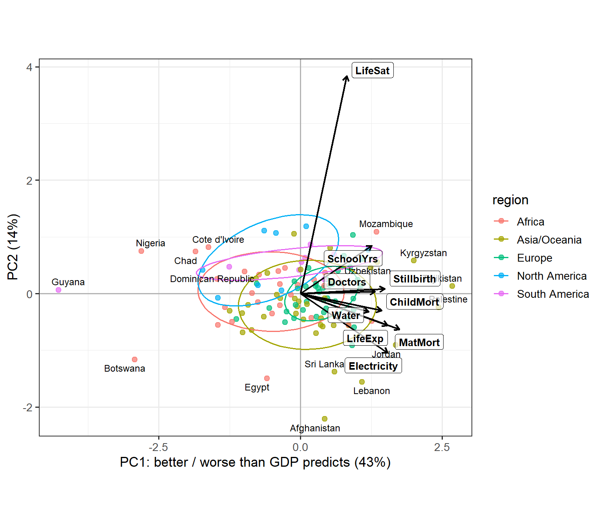
The region ellipses show where the regions fall. Europe is compact and sits to the right: few European countries do much worse than their income predicts. Africa is the most spread out, and most of the countries far to the left are African. The Americas sit a little higher than the rest on PC2, reflecting the high life satisfaction seen in the canonical analysis. At the bottom are countries with good infrastructure but very low life satisfaction for their income: Afghanistan, Lebanon, Egypt and Sri Lanka. All four have been through war or economic crisis in recent years.
Figure 12 ranks the countries by their PC1 score, showing the dozen at each end.
# PC1 of residuals as a "performance relative to income" score
top <- scores |>
arrange(PC1) |>
slice(c(1:12, (n() - 11):n())) |>
mutate(country = factor(country, levels = country),
side = ifelse(PC1 > 0, "better", "worse"))
ggplot(top, aes(PC1, country, colour = side)) +
geom_segment(aes(x = 0, xend = PC1, yend = country)) +
geom_point(size = 2.5) +
scale_colour_manual(values = c(better = "#1b7837", worse = "#c51b7d")) +
labs(x = "Residual PC1 score", y = NULL, colour = "Than GDP predicts") +
theme(legend.position = "inside",
legend.position.inside = c(0.02, 0.98),
legend.justification = c(0, 1),
legend.background = element_rect(colour = "grey70"))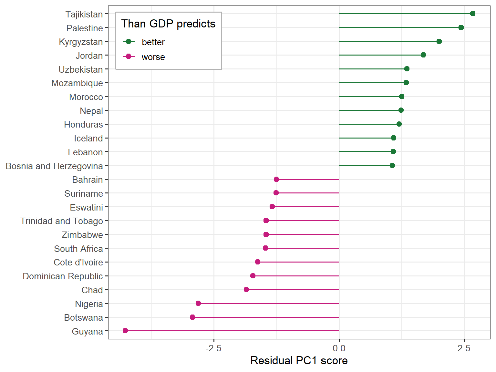
The underperformers mostly fall into two groups:
The other two fit less neatly. Côte d’Ivoire falls short most on doctors, life expectancy and electricity. The Dominican Republic is a different case: its shortfall is concentrated in the mortality measures and safe water, while its number of doctors is about what its income predicts.
Guyana is the extreme case, and it shows that this kind of score depends on when each value was measured. Guyana’s GDP per capita has multiplied several times since oil production began in 2019. Its health and infrastructure outcomes, which change slowly, have not caught up yet. The value for life satisfaction is even older, from 2011.
The overperformers are a more varied group:
These lists also depend on the model. If I use a quadratic in log GDP instead of the spline, the PC1 scores still correlate .93 with these, and the extreme countries stay put: Tajikistan at the top, and Guyana, Nigeria and Botswana at the bottom. But 9 of the 24 countries in Figure 12 change. Greece, Spain, Finland, Belarus, North Macedonia and New Zealand join the overperformers, and Qatar, Ghana and Sierra Leone join the underperformers. Some of this is just a matter of where the cutoff falls: Greece, Spain, Finland and Belarus rank just outside the top dozen here.
The lesson goes beyond any one country. A residual score measures performance relative to a fitted model of GDP. So it reflects errors or quirks in GDP, and the shape chosen for the curve, as well as real achievement in the outcomes.
So far, the residuals have been summarized by correlations and principal components. This section looks at individual countries, and asks two different questions. Which countries are unusual, given their income? And which ones have the most influence on the fitted model? As we will see, these are mostly not the same countries.
The natural measure of how unusual a country is across all nine residuals is its squared Mahalanobis distance, \(D^2\), the distance from the center of the residuals, taking their correlations into account. If the residuals are multivariate normal, \(D^2\) has approximately a \(\chi^2\) distribution with 9 degrees of freedom, and a QQ plot against that distribution (Figure 13) shows how well this holds.
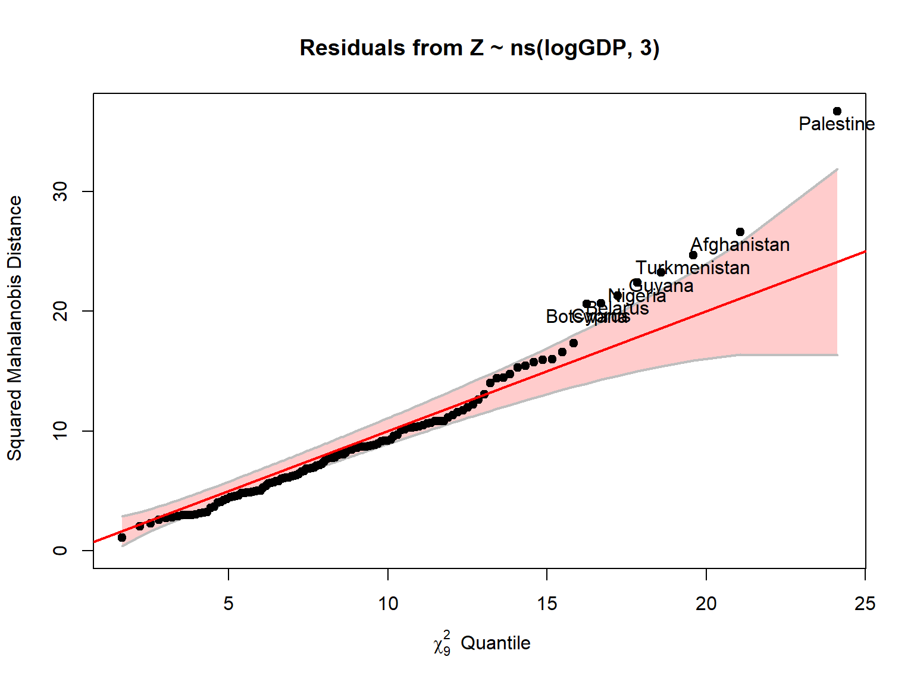
#> D2
#> Palestine 36.7
#> Afghanistan 26.6
#> Turkmenistan 24.7
#> Guyana 23.2
#> Nigeria 22.4
#> Belarus 21.3
#> Cyprus 20.7
#> Botswana 20.6
#> Lebanon 17.3
#> Pakistan 16.6Most countries follow the line closely, up to a \(D^2\) of about 15. Only the upper tail is too heavy. Nine countries are beyond the 95th percentile of \(\chi^2_9\) (16.9), where we would expect about six, and five are beyond the 99th percentile (21.7), where we would expect about one. Only Palestine, at 36.7, is far outside the confidence band.
\(D^2\) does not simply reward doing very well or very badly. It picks out unusual combinations. Guyana makes the point: it has by far the lowest PC1 score in Figure 12, but it is only fourth here. It is below its prediction on all nine outcomes, by 1.3 to 4.3 residual SDs, but a shortfall on everything at once runs along the direction in which the residuals usually vary. The others on the list are more out of pattern, and they fall into a few groups:
The last group raises the question of data quality. Are these real differences, or artifacts of how the indicators are estimated and reported? The maternal mortality of Turkmenistan (5 per 100,000) and Belarus (1 per 100,000), and of Cyprus in the other direction, are worth treating with some caution.
Old data are not the main explanation. In these 121 countries the values are nearly all recent. Maternal mortality is from 2020 for every country, and all the others but doctors and life satisfaction are from 2021 or later. The notable exceptions are the ones already mentioned: Guyana’s life satisfaction value is from 2011, and Palestine’s doctors value is from 2018, well before its GDP value.
An outlier need not affect the fit very much. Influence depends on both the size of a country’s residual and its leverage, how far its log GDP is from the rest. Figure 14 plots these two against each other, with measures generalized to the multivariate case, on log scales. Each circle’s area shows Cook’s distance, the overall influence on the coefficients \(\mathbf{B}\). The dashed diagonal lines mark constant values of the product of leverage and residual.
This format, provided in the mvinfluence package makes it easier to see the influential points than the standard car::influencePlot() version that plots signed residuals, so the influential cases appear in the upper and lower right corners of the plot.
#> H Q CookD L R
#> Afghanistan 0.076 0.260 0.581 0.083 0.282
#> Central African Republic 0.193 0.064 0.363 0.239 0.080
#> Guyana 0.045 0.212 0.276 0.047 0.222
#> Ireland 0.168 0.105 0.517 0.203 0.126
#> Luxembourg 0.156 0.119 0.543 0.185 0.141
#> Palestine 0.027 0.323 0.254 0.028 0.332
#> Singapore 0.195 0.042 0.238 0.242 0.052
#> Turkmenistan 0.016 0.212 0.100 0.016 0.216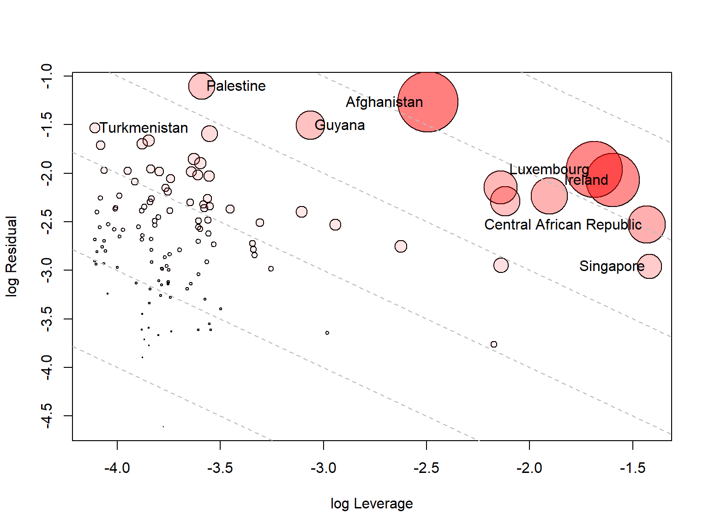
Most of the outliers are at the left: Palestine, Turkmenistan, Nigeria and Belarus have large residuals but little leverage, because their incomes are in the middle of the range. With only GDP as a predictor, the high-leverage countries are simply the ones at the two ends of the income range. On the right, these are the poorest countries, the Central African Republic, Mozambique and Malawi (about $1,100 to $1,600), and the richest, Singapore, Ireland, Luxembourg and Qatar (above $110,000). The three large unlabeled circles in the plot are Mozambique, Malawi and Qatar.
Afghanistan has the most influence, because it combines the two: it is poor (about $2,000) and has a large residual. Next are Luxembourg and Ireland. This is a concern, because GDP is at its least meaningful for countries like these, where it is inflated by the profits of multinational firms and financial flows. Yet these few countries help to set the top end of the spline curve, and so the residuals of everyone else nearby. Likewise, Mozambique, the surprise in the last section, is the second-poorest country in the data, where the fit is least well anchored.
Table 2 repeats the main analyses without these countries: first Nigeria and Guyana, the two points noted in Figure 10, then the ten largest values of \(D^2\), then the eight largest values of Cook’s distance.
# refit the GDP model without some countries, standardizing the responses again
refit <- function(drop = character()) {
d <- cc[!(cc$country %in% drop), ]
Zd <- scale(as.matrix(d[, resp]))
m1 <- lm(Zd ~ logGDP, data = d)
m2 <- lm(Zd ~ ns(logGDP, 3), data = d)
R <- cor(resid(m2))
p <- prcomp(resid(m2))
c("Countries" = nrow(d),
"Pillai, spline vs. linear" = anova(m1, m2)$Pillai[2],
"Average partial correlation" = mean(R[lower.tri(R)]),
"ChildMort, Stillbirth" = R["ChildMort", "Stillbirth"],
"ChildMort, LifeExp" = R["ChildMort", "LifeExp"],
"Electricity, Doctors" = R["Electricity", "Doctors"],
"Largest LifeSat correlation" = max(R["LifeSat", setdiff(resp, "LifeSat")]),
"PC1 share of variance" = p$sdev[1]^2 / sum(p$sdev^2))
}
cook <- influence(mod2)$CookD
sensitivity <- cbind("All" = refit(),
"Without Nigeria, Guyana" = refit(c("Nigeria", "Guyana")),
"Without top 10 D²" = refit(names(sort(D2, decreasing = TRUE))[1:10]),
"Without top 8 Cook's D" = refit(cc$country[order(cook, decreasing = TRUE)][1:8]))
knitr::kable(round(sensitivity, 2))| All | Without Nigeria, Guyana | Without top 10 D² | Without top 8 Cook’s D | |
|---|---|---|---|---|
| Countries | 121.00 | 119.00 | 111.00 | 113.00 |
| Pillai, spline vs. linear | 0.71 | 0.71 | 0.82 | 0.69 |
| Average partial correlation | 0.37 | 0.31 | 0.32 | 0.33 |
| ChildMort, Stillbirth | 0.73 | 0.68 | 0.71 | 0.71 |
| ChildMort, LifeExp | 0.64 | 0.55 | 0.56 | 0.59 |
| Electricity, Doctors | 0.60 | 0.59 | 0.46 | 0.57 |
| Largest LifeSat correlation | 0.26 | 0.24 | 0.28 | 0.27 |
| PC1 share of variance | 0.43 | 0.38 | 0.38 | 0.41 |
The strengths of the relations change, but the structure holds. Removing Nigeria and Guyana alone lowers the average partial correlation from .37 to .31, and child mortality with life expectancy from .64 to .55. So those two points were indeed adding to that correlation, though it remains substantial. Removing the outliers lowers the correlation of electricity with doctors from .60 to .46, the largest change. But the mortality block stays strong, life satisfaction stays isolated, and curvature stays highly significant. If anything, the test for curvature gets stronger without the outliers. So these countries are worth looking at for their own sake, but they don’t account for the general picture.
Everything so far has been about the means: how the typical level of each outcome changes with income, and how far a country falls from that level. This section turns to the other part of the model, the residual covariance matrix \(\boldsymbol{\Sigma}\). It holds the variance of each of the nine outcomes around its fitted curve, and the covariance of each pair of outcomes around theirs.
The MLM assumes there is just one \(\boldsymbol{\Sigma}\), the same at every level of income. The partial correlations in Figure 9 and the biplot in Figure 11 rest on this too: each one summarizes the whole range with a single picture. But do the outcomes vary together in the same way among the poorest countries as among the richest? Knowing that Malawi does better than expected on child mortality may tell you something different from knowing the same about Ireland.
To check this I divide the countries into three equal groups by income, up to about $13,000 (Low), up to about $41,000 (Middle) and above that (High), and compare the covariance matrices of their residuals using Box’s M test.
#>
#> Box's M-test for Homogeneity of Covariance Matrices
#>
#> data: res by cc$income
#> Chi-Sq (approx.) = 262.5299, df = 90, p-value = < 2.2e-16The hypothesis of equal covariance matrices is strongly rejected (\(\chi^2 = 262.5\), df = 90, \(p < 10^{-15}\)). This test is known to be sensitive to non-normality, and we have already seen that the residuals have heavy tails, so the small \(p\)-value alone doesn’t say how much the matrices differ. Figure 15 shows that, using the log determinant of each matrix, a one-number summary of how much multivariate scatter it describes. The High group stands well apart from the other two.
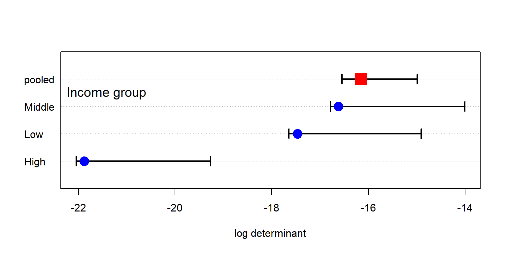
The determinant \(\lvert\boldsymbol{\Sigma}_i\rvert\) for each group mixes two things, though: how much each outcome varies, and how strongly the outcomes are correlated. Table 3 pulls these apart. Going up the income scale, the total residual variance steadily shrinks. But the correlations don’t follow it. They are weakest in the Middle group. That is why the Middle group has the largest determinant, even though the Low group has more total variance. The High group has the smallest determinant for both reasons: it has the least variance and the strongest correlations. Among the rich countries, the residuals come closest to differing along a single dimension.
res_inc <- split(as.data.frame(res), cc$income)
data.frame(`Log determinant` = bm$logDet[names(res_inc)],
`Total variance` = sapply(res_inc, \(d) sum(sapply(d, var))),
`Average correlation` = sapply(res_inc, \(d) {
r <- cor(d)
mean(r[lower.tri(r)])
}),
`PC1 share` = sapply(res_inc, \(d) {
e <- eigen(cov(d))$values
e[1] / sum(e)
}),
check.names = FALSE) |>
round(2) |>
knitr::kable()| Log determinant | Total variance | Average correlation | PC1 share | |
|---|---|---|---|---|
| Low | -17.47 | 2.93 | 0.41 | 0.51 |
| Middle | -16.62 | 2.17 | 0.27 | 0.36 |
| High | -21.88 | 1.73 | 0.47 | 0.55 |
Table 4 gives the residual standard deviation of each outcome. The outcomes don’t all change the same way. Electricity (.75 to .22), doctors (.66 to .30) and life satisfaction (.70 to .38) narrow sharply with income, and life expectancy does so between the Low and Middle groups. Rich countries are simply more alike on these. The mortality measures hardly change, schooling widens just a little, and water goes the other way (.39 to .57).
| Low | Middle | High | |
|---|---|---|---|
| ChildMort | 0.40 | 0.50 | 0.42 |
| Stillbirth | 0.41 | 0.46 | 0.44 |
| MatMort | 0.52 | 0.57 | 0.48 |
| Doctors | 0.66 | 0.43 | 0.30 |
| LifeExp | 0.64 | 0.42 | 0.41 |
| SchoolYrs | 0.54 | 0.55 | 0.59 |
| Electricity | 0.75 | 0.40 | 0.22 |
| Water | 0.39 | 0.43 | 0.57 |
| LifeSat | 0.70 | 0.62 | 0.38 |
Some of this comes from the measurements rather than the countries. Electricity has a hard ceiling: 98% of the High group and 80% of the Middle group have values of 99.5% or more, against 27% of the Low group. The logit spreads out the values near 100%, but it can’t separate countries that all report the same number, so there is little left to vary. Water is the reverse. Only 42% of the High group is at that level, and the logit stretches the differences among the rest. Even so, the ceiling is not the whole story. With electricity left out, Box’s test is still highly significant (\(\chi^2 = 207.6\), df = 72).
Figure 16 shows both kinds of change, for four of the outcomes. A change in the size of an ellipse along an axis is a change in variance. In the panels with doctors, the High ellipse is much narrower in the doctors direction, and the Low ellipse is much wider. A change in its tilt is a change in correlation. For example, doctors and water are positively related in the Low group (.52), but unrelated in the High group (\(-.01\)), so the ellipses in that panel cross. Child mortality and life expectancy are very tightly linked in the Low group (.85), less so in the High group (.62) and least in the Middle group (.46).
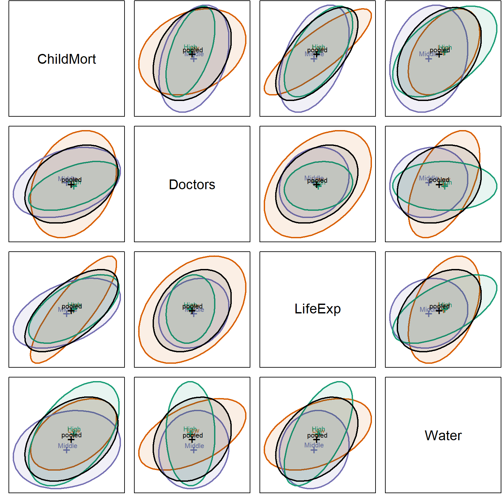
The correlations also qualify two earlier conclusions, with the caution that each is based on only 40 or so countries. The “state capacity” link among electricity, doctors and maternal mortality is strongest among the poorest countries, with correlations of .72 to .75 in the Low group, against .30 to .44 in the Middle group and .43 to .56 in the High group. The other is more surprising. Life satisfaction seemed to go its own way, but that is true mainly below about $41,000. Its largest correlation in either the Low or the Middle group is about .35, whereas in the High group it reaches .62 with schooling and .50 with maternal mortality. Among rich countries, those doing better than their income predicts on these outcomes do tend to be happier too.
So the single \(\boldsymbol{\Sigma}\) of the MLM is an average over three rather different matrices. This doesn’t invalidate what came before. The fitted curves don’t depend on it, and the pooled correlations are still a fair overall summary. But the multivariate tests are more approximate than they look, and a statement such as “these outcomes are correlated, given GDP” should be read as true on average, not at every level of income.
What can be done about it? The first remedy is one already used here: transformations, which often make variances more similar, but which can’t do anything about a ceiling. For that, it might be better to drop or recode a measure like electricity, which has little left to say among the richer countries. Beyond that, one can test with methods that don’t rely on equal covariance matrices, such as the bootstrap, or analyze the income groups separately, at the cost of even smaller samples. Or one can model the dispersion directly, allowing the variances to depend on GDP, as well as the means.
What if we started afresh, and took a visual look at the life aspect variables simply as a data matrix, using the standardized values in Z? There are no models, residuals or ellipses here: just 121 rows for the countries, 9 columns for the outcomes, and a color for each cell.
A display like this is only as good as the order of its rows and columns makes any patterns or anomalies visually apparent. Countries listed alphabetically would give you confetti. So I use the idea of effect ordering (Friendly and Kwan 2003): arrange the display according to the effect you want to see. Figure 17 sorts the countries by GDP per capita, and the outcomes by their correlation with log GDP, from child mortality (.88) on the left to electricity (.79) on the right. Values beyond \(\pm 2.5\) are given the darkest color.
# countries (rows) ordered by GDP, responses (cols) ordered by correlation with GDP
var_ord <- names(sort(cor(Z, cc$logGDP)[, 1], decreasing = TRUE))
Zlong <- data.frame(country = cc$country, logGDP = cc$logGDP, Z) |>
pivot_longer(all_of(resp), names_to = "response", values_to = "z") |>
mutate(country = reorder(country, logGDP),
response = factor(response, levels = var_ord),
z = pmax(pmin(z, 2.5), -2.5))
ggplot(Zlong, aes(response, country, fill = z)) +
geom_tile() +
scale_fill_distiller(palette = "RdBu", direction = 1, limits = c(-2.5, 2.5),
name = "z (+ = better)") +
scale_x_discrete(position = "top") +
labs(x = NULL, y = "Countries, ordered by GDP per capita") +
theme(axis.text.y = element_text(size = 5),
axis.text.x = element_text(angle = 45, hjust = 0),
panel.grid = element_blank())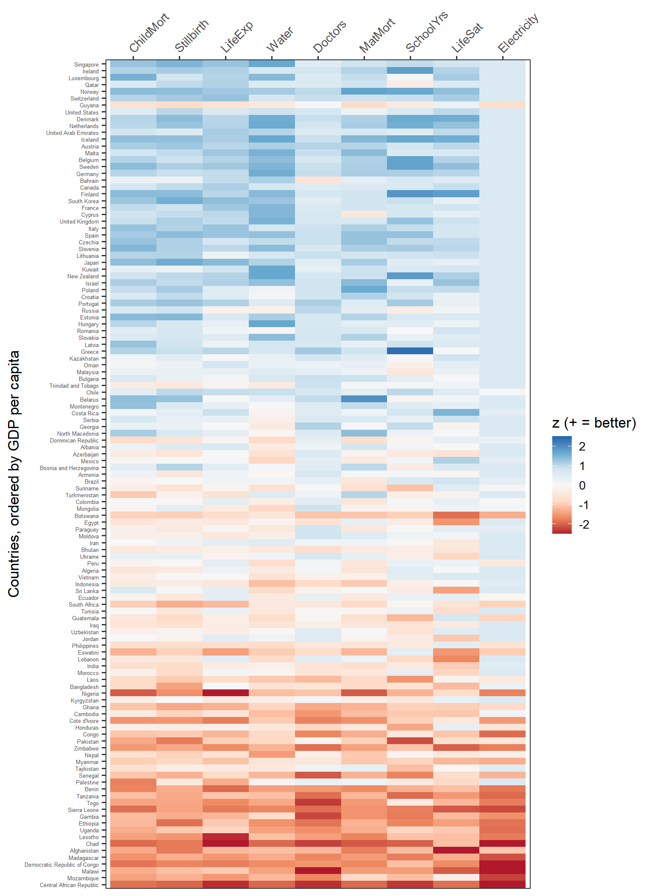
This is the OWID chart again, with all its panels folded into one picture. The main message is just as immediate: blue at the top, red at the bottom. In the richest third of countries, 96% of the cells are above average, and in the poorest third only 10% are.
But it can do something the small multiples cannot. In Figure 1, a country is an anonymous dot in each panel, and there is no way to follow it from one panel to the next. Here each country is a row, so you can read across it. Against the smooth gradient, the exceptions are rows or cells that are off-color for their position:
Many of these are the same countries that came out of the residual PCA and the outlier analysis: Guyana, Nigeria, Kyrgyzstan, Botswana, Afghanistan. There they took a fitted model to find. Here you can simply see them, once the matrix is put in a useful order. Of course, the model tells you how far out of line they are, and the heatmap only tells you where to look.
Figure 18 shows the same matrix another way. Now each country is a line, running across the outcomes in the same order, and colored by GDP.
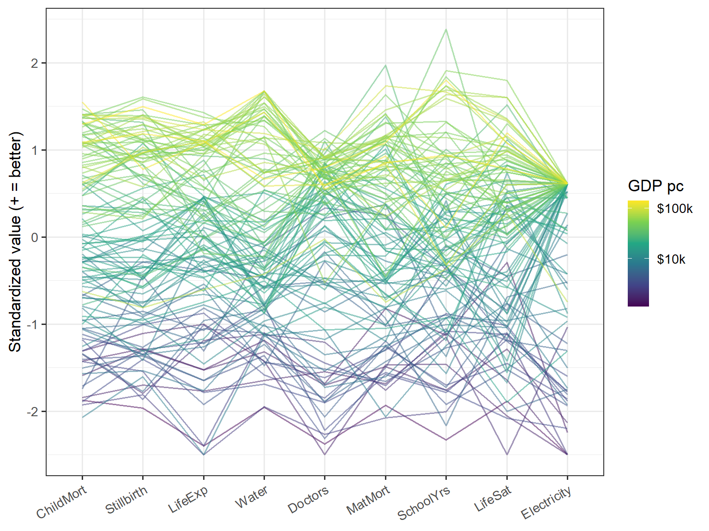
With 121 lines the middle of this plot is a tangle, and you can’t identify any particular country. It is better for seeing the overall shape. The colors stack up in order, with the rich countries in yellow and green on top and the poor ones in purple at the bottom, and that is the common factor once more. The lines stay in their bands at the two extremes and cross most in the middle incomes. The most striking feature is at the right: the lines from nearly all the richer countries converge on a single point at electricity, the ceiling seen as a fan. A lone yellow line well below the other rich countries is Guyana, and the line that spikes up at schooling is Greece.
I have been drawing HE plots for a long time, but this example still taught me some things. It has one quantitative predictor and many responses, a setup I had not thought much about, and which at first seems to leave an HE plot with nothing to do.
A spline rescues a degenerate ellipse. With \(\log(\text{GDP})\) as a single 1-df term, the H “ellipse” is only a line. Giving GDP a few more degrees of freedom lets it open up, and how far it opens shows how differently two outcomes respond to income. So what began as a trick to get a proper ellipse also gives a visual check: not for curvature itself, which the spline-vs-linear test and Figure 3 show better, but for outcomes whose curves have different shapes. In Figure 7 the GDP ellipse stays a thin cigar in most panels, and fattens where doctors are involved, because doctors turn down among the richest countries while the rest keep rising.
A grouping variable gives the plot something to compare. Adding region is what made the HE plots interesting. It gave a second H ellipse, a contrast between an effect that is nearly one-dimensional and one that is not, and a question I could not have asked of GDP alone: how do countries differ at the same income? It also turned the problem into a MANCOVA, which comes with its caveat about unequal slopes.
The defaults can undo the adjustment. This is the one I would most like others to know about. The region H ellipse is adjusted for GDP, but the region means that heplot() draws by default are not, and neither are the scores that candisc() plots. Left alone, these displays mostly show income all over again, with Can1 correlating \(-0.86\) with log GDP. The obvious fix, using the residuals from a model with GDP alone, is itself slightly wrong, for a textbook reason: because region and GDP are related, it shrinks the region differences. (Thanks to Gavin Klorfine for pointing this out.) The partial residuals from the joint model get it right, for the display at least.
PCA can be aimed. A PCA of the outcomes rediscovers income, which we already knew. Taking out the known common factor first turns the same tool toward a better question: who does more, or less, than their money predicts?
Rescaling makes panels comparable. The development profiles (Figure 3) came from wanting to compare across the OWID panels. Just rescaling each fitted curve to run from 0 to 1 was enough to show a sequence I couldn’t see in the separate panels, though Figure 5 shows how much that sequence depends on the scale of each outcome.
I started out with a simple thought: how can I take a lovely chart from Our World in Data and try to re-envision the data from a multivariate perspective. I also thought about how to use this data to explore how the graphical methods I’ve been developing could shed some additional light on an interesting applied problem. I learned some lessons from this, and here are some take-aways for you:
Small multiples like Figure 1 show the marginal relations very well. Multivariate displays add the joint structure: what’s common, what’s left over, and who’s unusual. Getting there takes some work up front. Orienting, transforming and standardizing the variables comes first, and these are not neutral steps. As Figure 5 shows, doctors go from second to last in the development sequence just by changing the scale, so it is as well to know what your scales are saying.
A larger lesson is to take out what you already know, to see what remains. The raw correlations average .81 and show little structure, because GDP drives them all. Controlling for GDP drops the average to .37, and the structure appears. Nearly every multivariate display here became more interesting once income was out of the way.
But a residual is only relative to its model. Guyana looks like a failure because its GDP changed faster than everything else, and Palestine looks like a success partly because its GDP fell. Change the curve from a spline to a quadratic, and 9 of the 24 countries in Figure 12 change too. A ranking like this one says as much about GDP, and about the shape of the curve, as it does about the countries.
The same care applies to summaries over the whole range of incomes. Life satisfaction seemed to go its own way, nearly independent of everything else once GDP was controlled. That holds for most of the world, but among the richest third of countries it is linked with schooling and maternal mortality. A single covariance matrix is an average, and here it averages over rather different matrices.
Finally, the models and pictures need each other. The sorted heatmap in Figure 17 shows many of the same exceptions that the outlier analysis found, with no model at all. The model says how far out of line a country is, and how much to believe it. The picture shows you where to look, and it keeps you honest about what the model has left out.
Data: Our World in Data (2026) (CC-BY), from UN IGME, UN MMEIG, WHO/UNICEF, UN WPP, UNESCO, UNDP, Gallup and the World Bank. Thanks to Max Roser and the team at Our World in Data for providing such interesting datasets to explore. Thanks also to Gavin Klorfine who gave insightful comments on this post.
Friendly, M. (2026, November). Our World in Multivariate Data: From twelve scatterplots to one multivariate picture of life at different levels of GDP. Michael Friendly’s blog. https://friendly.github.io/blog/posts/2026-11-OWIMD/
@Misc{Friendly:2026:OWIMD,
author = {Friendly, Michael},
title = {Our World in Multivariate Data: From twelve scatterplots to one
multivariate picture of life at different levels of {GDP}},
year = {2026},
month = nov,
howpublished = {Blog post},
url = {https://friendly.github.io/blog/posts/2026-11-OWIMD/},
}